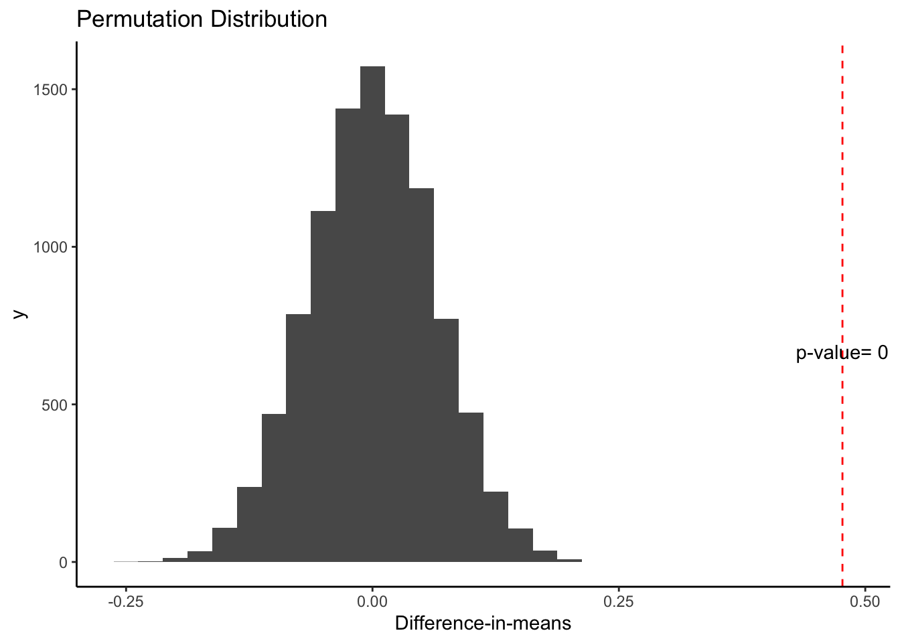
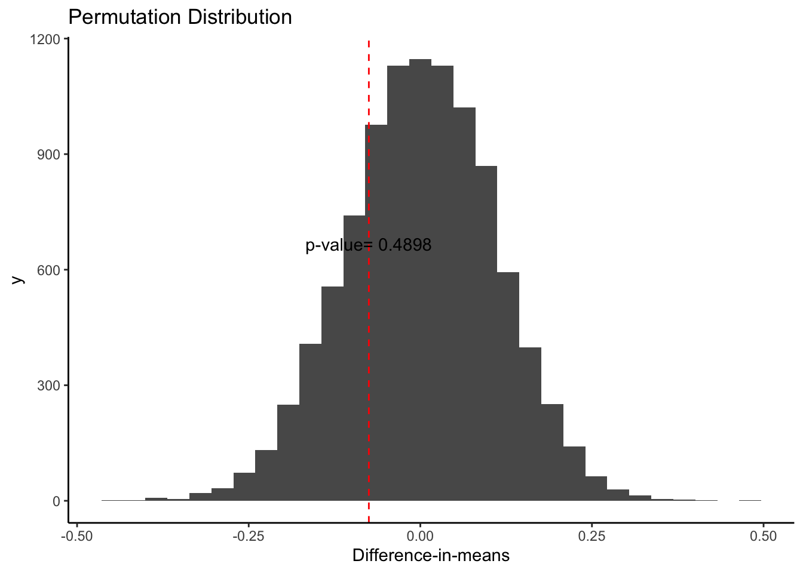

# Step 1: define your sample
# define a sample of N = 100 units and its treatment potential outcome (you could name the variable Y1) and its control potential outcome (you could name the variable Y0)
# let's imagine the control potential outcome is random noise, representing the many factors that explain the outcome in the control group. you could use the rnorm() or the runif() function to generate that "noise"
# you define how the treatment potential outcome differs from the control potential outcome
# use the data.frame() function to create a data frame from scratch.
Y0 <- rnorm(n=100)
Y1 <- Y0^2 + rnorm(n=100)
data <- data.frame(Y1, Y0)Practical 1: Random assignment
This exercise is inspired by similar problems by Graeme Blair, Chad Hazlett, and Erin Hartman.
Learning goals
- Understanding what a potential outcome is and how it is related to observed outcomes
- How to randomize treatment assignment
- How the estimand “average treatment effect” is constructed from potential outcomes
- How the estimator of the ATE, the difference-in-means, is calculated from data from an experiment
Potential outcomes
Treatment assignment
# assign treatment (add treatment variable to your population using mutate() and you can create the variable using the sample() function.)
# use ?sample to figure out how to use the function
# your treatment should be binary, so it should take on values 0 and 1
data <- data |>
dplyr::mutate(treatment =
sample(c(0,1),
size = 100,
replace = TRUE))Observed outcomes
# construct observed outcome (use the switching equation!)
# again use mutate() to add the observed outcome to your dataset
data <- data |>
dplyr::mutate(Y = ifelse(treatment == 1, Y1, Y0))Take a look at your data and make sure it has potential outcomes, a treatment indicator, and your outcome (four variables total)
data Y1 Y0 treatment Y
1 0.625666843 0.975066144 1 0.625666843
2 3.524368119 1.397889474 0 1.397889474
3 0.423482045 0.201777057 1 0.423482045
4 2.737941141 1.667503348 1 2.737941141
5 2.360493852 -1.266130816 1 2.360493852
6 1.053570070 0.434924901 0 0.434924901
7 2.592765206 1.523427680 0 1.523427680
8 -0.610905736 0.676986736 0 0.676986736
9 -0.552475641 -0.803254501 1 -0.552475641
10 2.560861228 1.637964797 0 1.637964797
11 2.196700010 1.457094518 1 2.196700010
12 5.712583048 -2.095541354 1 5.712583048
13 1.378359287 0.974784969 1 1.378359287
14 0.951104811 0.697883590 1 0.951104811
15 0.670245350 -1.107336062 0 -1.107336062
16 -0.435772923 0.221490907 1 -0.435772923
17 -0.007376078 0.203853765 1 -0.007376078
18 0.797755579 -0.326053842 1 0.797755579
19 1.429787794 0.089736545 0 0.089736545
20 2.356363038 -1.601871366 1 2.356363038
21 1.183200303 -0.568705022 0 -0.568705022
22 -0.516138686 0.289650670 1 -0.516138686
23 0.194978298 0.356209701 1 0.194978298
24 0.218899493 -1.313573365 1 0.218899493
25 0.014099829 0.641164639 0 0.641164639
26 -0.427163290 -0.278616885 0 -0.278616885
27 0.610822474 -0.170786423 1 0.610822474
28 1.702049816 -0.199591209 0 -0.199591209
29 -0.143021465 -0.340437865 1 -0.143021465
30 4.741687579 -2.124659206 0 -2.124659206
31 -1.390890874 0.112275820 0 0.112275820
32 1.558521932 -1.252741225 1 1.558521932
33 1.663997382 0.276803024 0 0.276803024
34 0.853798720 0.472414847 0 0.472414847
35 -0.502077293 -0.613282902 1 -0.502077293
36 1.686223506 0.592651030 1 1.686223506
37 1.066228898 -1.015394139 1 1.066228898
38 -2.146789708 0.220439084 1 -2.146789708
39 0.869027257 -0.572371569 1 0.869027257
40 -0.244108840 0.894035916 0 0.894035916
41 0.318295008 -0.586531642 1 0.318295008
42 3.535819216 -1.906333889 0 -1.906333889
43 4.088446990 2.058419956 0 2.058419956
44 0.321898032 1.711559588 0 1.711559588
45 0.467733266 -0.628435633 1 0.467733266
46 7.269427686 2.098431505 0 2.098431505
47 -0.886331667 0.675238223 0 0.675238223
48 1.565138485 1.308154906 0 1.308154906
49 0.770952306 0.998025405 1 0.770952306
50 0.755148290 -0.784205056 0 -0.784205056
51 -1.758852723 -0.138155274 1 -1.758852723
52 2.384604087 -1.284322678 1 2.384604087
53 -0.864876309 -0.013341160 1 -0.864876309
54 -0.956880236 1.083041587 0 1.083041587
55 1.813558776 1.516439577 1 1.813558776
56 1.634049547 1.173656752 0 1.173656752
57 1.322961746 -0.789314656 1 1.322961746
58 -1.770589470 0.135728739 0 0.135728739
59 -0.909188893 0.353019845 0 0.353019845
60 0.834764509 -0.314360199 0 -0.314360199
61 -0.381015001 0.514563373 0 0.514563373
62 1.837539974 0.288608876 1 1.837539974
63 -0.091256155 -0.353628496 0 -0.353628496
64 2.391994227 1.916170224 0 1.916170224
65 1.991383927 1.291373453 1 1.991383927
66 6.770547608 -2.489625143 0 -2.489625143
67 -0.321629203 0.149039093 0 0.149039093
68 5.012514164 2.196214215 0 2.196214215
69 1.508160441 0.252478400 1 1.508160441
70 0.093515201 -0.921604882 0 -0.921604882
71 -1.253928118 -0.175236619 0 -0.175236619
72 0.286440057 -0.292948558 0 -0.292948558
73 0.198957652 0.004779535 1 0.198957652
74 -0.996887550 0.070852109 0 0.070852109
75 -0.193996540 -0.357120918 1 -0.193996540
76 0.146711196 0.137458720 0 0.137458720
77 3.448078733 2.074234937 0 2.074234937
78 1.824274558 -1.113619587 0 -1.113619587
79 -1.782583973 0.543508762 0 0.543508762
80 -0.746943177 -0.359290746 0 -0.359290746
81 -0.935377006 0.842245253 0 0.842245253
82 0.935149696 -1.388549490 1 0.935149696
83 5.967666417 2.036476507 1 5.967666417
84 2.430479950 -1.839435775 0 -1.839435775
85 0.242880739 0.965702498 1 0.242880739
86 3.978012162 -1.684678772 0 -1.684678772
87 -0.539145147 -0.769399288 0 -0.769399288
88 0.635945998 -0.664606818 0 -0.664606818
89 0.448383140 -0.027624927 1 0.448383140
90 -0.294432873 0.312826285 0 0.312826285
91 -0.282382737 0.247544337 0 0.247544337
92 0.262460544 1.413389492 0 1.413389492
93 1.015426551 1.273911060 0 1.273911060
94 -0.279900533 -0.369506925 1 -0.279900533
95 -1.387701133 0.273183932 1 -1.387701133
96 -1.069568337 0.094159512 0 0.094159512
97 1.977793184 -1.513217788 0 -1.513217788
98 0.817099257 1.130830943 0 1.130830943
99 1.473007050 0.937858812 0 0.937858812
100 -0.034547607 -0.161096750 0 -0.161096750Calculate your estimand
# calculate the estimand based on the potential outcomes
# using the summarize function
data |>
summarize(ATE = mean(Y1) - mean(Y0)) ATE
1 0.8427945# it should give you the same result as
data |>
dplyr::mutate(tau = Y1 - Y0) |>
summarize(ATE = mean(tau)) ATE
1 0.8427945Diff-in-means
# calculate your *estimate* of that estimand by coding up the difference-in-means estimator
# again you can use the summarize() command
data |>
summarize(ATEhat =
mean(Y[treatment==1]) -
mean(Y[treatment==0])) ATEhat
1 0.6364377# it should give the same result as
lm(Y ~ treatment, data = data)
Call:
lm(formula = Y ~ treatment, data = data)
Coefficients:
(Intercept) treatment
0.2279 0.6364 How close are your estimate and your estimand? What do you make of this?
# combine your estimate and your estimator into one summarize command, so two numbers are produced (ATE and d-i-m)
# i.e. data |> summarize(ATE = ?, dim = ?)
data |>
summarize(ATE = mean(Y1) - mean(Y0),
ATEhat = mean(Y[treatment==1]) -
mean(Y[treatment==0])) ATE ATEhat
1 0.8427945 0.6364377Randomisation inference
Let’s write a function in R which takes as arguments the following: a vector of outcomes, Y ; an original treatment vector, D; and a number of iterates M.
The function should take the data, use the difference-in-means estimator on the actual data, and then run M iterates of randomization inference. For each iterate, randomize treatment assignment and calculate the difference-in-means under the sharp null assumption and the new treatment assignment.
Then it will produce a plot containing the following: i) A histogram or density plot of the randomization distribution of the difference-in-means estimates under the null; ii) A vertical line representing the original result in the actual data; iii) the two-tailed p-value for the observed difference in means statistic against the sharp null.
sharp_test <- function(Y, D, times) {
# Get the observed ATE
ate <- mean(Y[D == 1]) - mean(Y[D == 0])
# Permute the treatment, take permuted ATEs
perms <- tibble(ate_perm = replicate(n = times, {
D_perm <- sample(D, size = length(D), replace = FALSE)
mean(Y[D_perm == 1]) - mean(Y[D_perm == 0])
}))
# Obtain the p-value
right <- sum(perms$ate_perm >= abs(ate))/nrow(perms)
left <- sum(perms$ate_perm <= -abs(ate))/nrow(perms)
p.val <- (right + left)
# Make the plot
ggplot(perms, aes(x = ate_perm)) + geom_histogram() + geom_vline(xintercept = ate,
colour = "red", linetype = "dashed") + theme_classic() +
ggtitle("Permutation Distribution") + xlab("Difference-in-means") +
annotate("text", x = ate, y = times/15, label = paste("p-value=",
p.val)) }Now, let’s try the function
# Fake data 1
D1 <- rbinom(1000, size = 1, prob = 0.5)
Y1 <- rnorm(1000) + D1 * 0.5
sharp_test(Y1, D1, 10000)`stat_bin()` using `bins = 30`. Pick better value with `binwidth`.
# Fake data 2
D2 <- rbinom(1000, size = 1, prob = 0.1)
Y2 <- rnorm(1000)
sharp_test(Y2, D2, 10000)`stat_bin()` using `bins = 30`. Pick better value with `binwidth`.